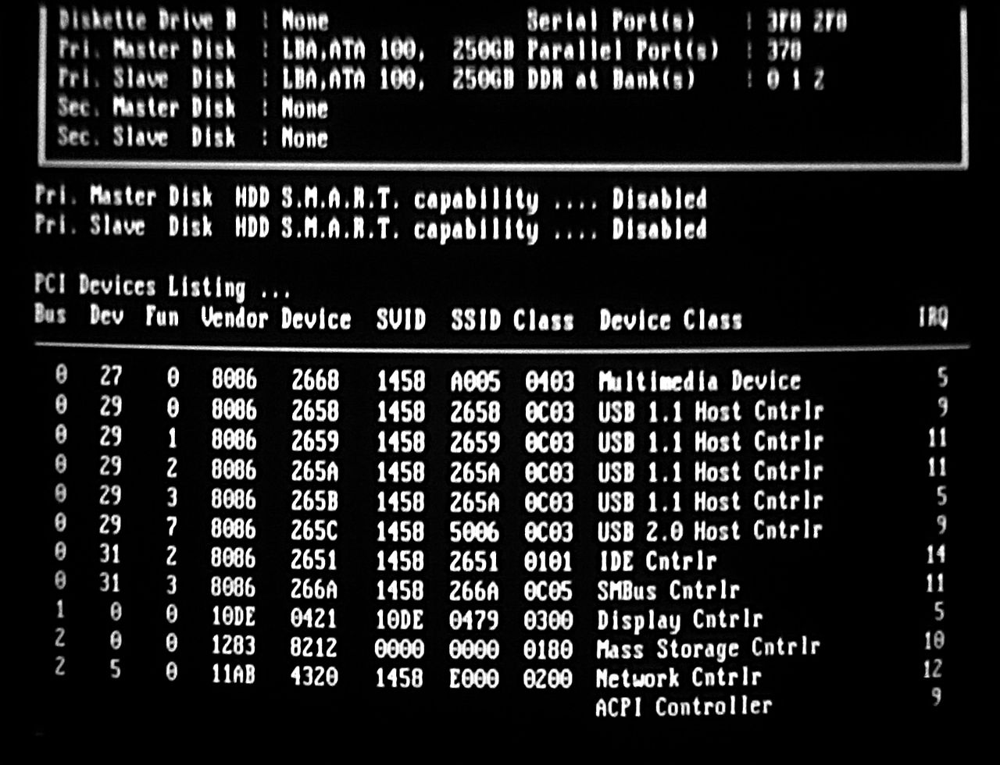

Testowanie i diagnozowanie sprzętu komputerowego, rozbudowa i unowocześnianie zestawu komputerowego
Testowanie sprawności zestawów komputerowych pozwala nam na sprawdzenie czy nasz komputer działa poprawnie, czy jego wydajność jest zadowalająca i czy wszystko dobrze ze sobą współgra.
W sieci znajdziemy masę programów pozwalających na sprawdzenie wydajności naszego komputera.
Na przykład:
CPU-Z: Monitoruje pracę części komputera i wyświetla wszystkie potrzebne informacje o każdym elemencie
GPU-Z: Pokazuje wszystkie informacje o karcie graficznej
Unigine Valley Benchmark: Program do testowania wydajności karty graficznej
Warto wspomnież także o teście sprzętu wewnątrz BIOSU komputera. Jest to POST (Power On Self Test). Podczas włączania komputera, ten przeprowadza test sprawdzający poprawność wszystkich komponentów potrzebnych do działania komputera.
Jeśli jest coś nie tak z naszym zestawem zostaniemy o tym poinformowani znakami dźwiękowymi wydawanymi przez komputer. Aby sprawdzić co jest nie tak, będziemy musieli posłużyć się instrukcją płyty głównej i sprawdzić jakie i ile dźwięków wydał komputer. Wszystko będzie tam dokładnie opisane.
Pierwsza faza POST:
Druga Faza POST:

Po pewnym okresie czasu zauważymy że nasz komputer zwalnia, nie prezentuje tak dobrej wydajności jak wtedy gdy go kupiliśmy, dzieje się tak ponieważ programy, gry, systemy dostają aktualizacje, są ulepszane, upiększane a nasz komputer ma w środku to samo co x lat temu. Wymagania się zwiększają a komputer się starzeje.
Gdy zauważymy takie spadki będziemy musieli rozważyć ulepszenie jednostki.
W tym celu powinniśmy sprawdzić które z komponentów są już przestarzałe, nie spełniają wymagań programów i przygotować pieniądze na ich wymianę.
Najczęściej będziemy wymieniać kartę graficzną, ponieważ ona odpowiada za to co wyświetlane jest na ekranie i to ona pracuje w ciągłym obciążeniu podczas grania. W ostatnich latach wychodzi niesamowicie duża ilość kart graficznych, dlatego znalezienie czegoś w każdym budżecie nie powinno być problemem.
Możemy także przeprowadzić małe modernizacje. Na przykład:
wymienić chłodzenie procesora na coś lepszego
dołożyć kość RAM
wymienić pasty termoprzewodzące
przeczyścić zakurzone miejsca
Podkręcić procesor i kartę graficzną jeśli na to pozwalają(Tylko wtedy gdy mamy dobre chłodzenie i spory zapas mocy zasilacza)